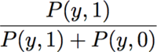
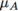

Faq is prediction probability and threshold calculated for PLSDA
Issue:
How is the prediction probability and threshold calculated for PLSDA?
Possible Solutions:
PLSDA calculates a "prediction probability" (model.detail.predprobability) and a classification threshold (model.detail.threshold) for each class modeled. These are calculaed using a Baysian method described in two documents below:
The probability is calculated in the function plsdthres. You can view a demo of this function >> plsdthres demo to see more about its use, but basically this function takes the predicted y values from the plsda model, fits a normal distribution to them, then uses that to calculate the probability of observing a given y-value. The actual calculation is:
Probability that a sample is class 1 = 
where y is the y value predicted from the PLSDA model for the sample in question, P(y,1) is the probability of measuring the given y value for a class 1 sample and P(y,0) is the probability of measuring the y value for a class 0 sample.
The two probabilities used above, (P(y,1) and P(y,0)) are estimated from the y-values observed in the calibration data. The plot to the right gives an example (and comes from the plsdthres demo). The green bars are a histogram of the y-values predicted for the "class 1" samples. The blue bars are a histogram of the y-values predicted for the "class 0" samples. If we fit a normal distribution to each of those histograms, they would cross aty_pred = 0.44.
That is: the probability of measuring a value of 0.44 for a class 1 sample is equal to the probability of measuring a value of 0.44 for a class 0 sample. Because the equation above "normalizes" these probabilities, we would say that a sample giving a y-value of 0.44 has a 50% chance of being in class 1 (or 0).
Two more examples: there is a small non-zero probability of measuring a value of 0.40 for a class 1 sample, but a larger probability of measuring 0.40 for a class 0 sample. Again, normalizing we get 10% and 90% (prob of sample being class 1 or class 0, respectively) A value of 0.8, however, has effectively a zero probability of being observed for a class 0 sample (the distribution fit to the class 0 samples has dropped to near zero out this far). This means that the probability that a sample giving a y-value of 0.8 is in class 1 is essentially 100%.
Another technical description:
Given two groups of samples "A" and "B" assume we have a PLSDA model which was designed to separate the two groups using a y-block where each group A sample is assigned a zero and each group B sample is assigned a one. The estimated y values (i.e. y-values predicted on the calibration set) for each group using that model, call them y_est_A and y_est_B, will have some finite range around zero and one, respectively. We can fit y_est_A and y_est_B using two separate distribution functions - one which describes the y-values we would expect from the entire population of A samples and one which describes the entire population of B samples. For simplicity, the algorithm assumes Gaussian distributions of the estimated values. This allows us to simply take the standard deviation and mean of y_est_A and y_est_B and use those to construct two Gaussian profiles that we assume are close to representing the true profiles of all samples in the populations of A and B. [note: The math up to this point is simply the mean and standard deviation equations + the standard equation of a gaussian.] This allows us to calculate the probability of observing a value of y given a sample from group A:
where and  are the standard deviation and mean of group A, respectively. Repeat this for B to get P(y|B).
To calculate the probability for any value of y, we assume that a sample for which we've made a prediction is definitely one of the two groups (one should use model residuals and Hotelling's T^2 to eliminate samples which are not safely predicted using the model). Thus we can say:
That is, we normalize the the probabilities to 1. It turns out that this is supported by Bayes' theorem which gives us the probability that a sample is from group A given a particular value of y, P(A|y), from this equation:
Where P(A) and P(B) are the probabilities that we will observe A or B in the future, respectively. If we assume that the probability of observing A or B is similar to how many samples of A and B were in the original calibration set, we can reduce this to:
[Read as: the probability that a sample is from group A given a particular value of y is equal to the probability that a value of y would be observed for group A normalized by the total probability that we would observe a value of y for either groups A or B]. Thus we see that the normalized P(y|A) curve gives us the probability of group A for given a value of y. Repeat for B:
The two distributions typically "cross" in only one place (unless one is really broad in comparison to the other - in which case they will cross twice) which leads to a single point where both P(B|y) and P(A|y) are 0.5. This point is selected as the threshold for the PLSDA.
For another description of this method, see: Néstor F. Pérez, Joan Ferré, Ricard Boqué, "Calculation of the reliability of classification in discriminant partial least-squares binary classification," Chemometrics and Intelligent Laboratory Systems, 95 (2009), pp122–128.
Still having problems? Please contact our helpdesk at helpdesk@eigenvector.com